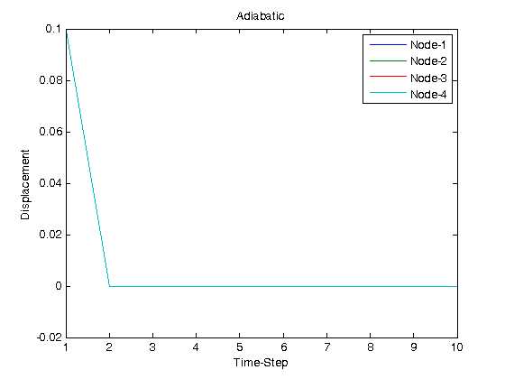

clear all; close all; clc;
dt = 0.1;
E = 100;
c = 1.0;
k=1.0;
h=0.25;
m = 0.3;
d0 = [0.1 0.25 0.1 0.25 0.1 0.25 0.1 0.25]';
d = d0;
B = 0.667*c*h/dt + 5.334*k/h;
A1_ad = [2.334*E/h m/4 -2.667*E/h 0.3335*m 0.3335*E/h -0.08335*m 0 0
-m/(2*dt) c*h/(6*dt)+2.334*k/(h) 0.667*m/(1*dt) -2.668*k/(h) -m/(6*dt) 0.334*k/h 0 0
-2.667*E/h -0.335*m (5.334*E)/h 0 -2.667*E/h 0.335*m 0 0
-0.667*m/(dt) -2.667*k/(h) 0 B 0.667*m/(1*dt) -2.667*k/(h) 0 0
0.334*E/h 0.08335*m -2.667*E/h -0.335*m 4.4667*E/h 0 -2.667*E/h 0.335*m
0.1667*m/dt 0.334*k/h -0.667*m/(dt) -2.667*k/(h) 0 0.3334*c*h/dt+4.667*k/h 0.667*m/(1*dt) -2.668*k/(h)
0 0 0 0 -2.667*E/h -0.335*m 5.334*E/h 0
0 0 0 0 -0.667*m/(1*dt) -2.667*k/(h) 0 B];
A0_ad = [0 -m/4 0 -0.335*m 0 0.08335*m 0 0;
-m/(2*dt) 0.1667*c*h/(dt) 0.667*m/(dt) 0 -0.1667*m/dt 0 0 0;
0 0.334*m 0 0 0 -0.335*m 0 0;
-0.667*m/dt 0 0 0.667*(c*h/(1*dt)) 0.667*m/(1*dt) 0 0 0;
0 -0.08335*m 0 0.334*m 0 0 0 -0.335*m;
0.1667*m/dt 0 -0.667*m/(1*dt) 0 0 (c*h/(3*dt)) 0.667*m/(1*dt) 0;
0 0 0 0 0 0.334*m 0 0;
0 0 0 0 -0.667*m/(1*dt) 0 0 0.667*(c*h/(1*dt))];
d_ad(:,1) = d0;
for n = 2:10
d_ad(:,n) = A1_ad\(A0_ad*d);
d=d_ad(:,n);
end
t = 1:10;
figure(2)
plot(t,d_ad(1,:),t,d_ad(3,:),t,d_ad(5,:),t,d_ad(7,:))
xlabel('Time-Step')
ylabel('Displacement')
legend('Node-1','Node-2','Node-3','Node-4')
title('Adiabatic')
